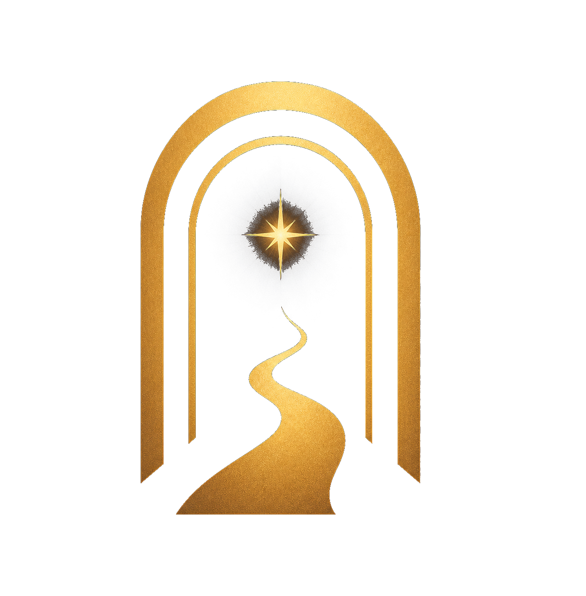

Her yolculuk bir işaretle başlar.
Gökyüzü geleceği
söylemez.
Yolunu aydınlatır.
Yapay zekâ destekli kişisel rehber. Gökyüzünden ilham alır, kararı sana bırakır.
18+ Yapay zekâ destekli Karar her zaman sana ait

✦
GÜNLÜK KİŞİSEL REHBERSana ait birkaç sakin dakika.
ASTROLUCK6KİŞİSEL REHBER
S
15 TEMMUZBUGÜN
✦
BUGÜNKÜ İŞARETİNİkinci bakış
İKİZLERİlk izlenimden önce, gözden kaçan ayrıntıya bir kez daha bak. Bugün küçük bir farkındalık büyük bir rahatlık yaratabilir.
✧
AI REHBERAklındaki soruyu paylaş
⌂Bugün✧Rehber◌Fincan▤Yolculuk
YENİ BİR DİJİTAL RİTÜEL
Bir cevap vermek için değil,
bakış açını genişletmek için.
AstroLuck6 sana ne yapman gerektiğini söylemez. Günün gökyüzünü, sembolleri ve sorularını daha sakin bir yerden değerlendirebilmen için sana eşlik eder.
Her ekran merak, huzur ve seçim alanı bırakır. Kehanet değil; farkındalık. Baskı değil; davet.
YOL BOYUNCA
Her gün, sana ait küçük bir alan.
Gökyüzünden fincanına, sorularından geçmiş işaretlerine kadar deneyimin her parçası aynı sakin dille konuşur.
01
Bugünkü Gökyüzü
Gerçek gökyüzü verilerini, gereksiz teknik kalabalık olmadan gününün ana temasına dönüştürür.
İşareti gör →02
Konuşabileceğin Rehber
AI Rehber sorunu dinler, ihtimalleri görünür kılar ve kararı senin yerine vermeden yanında yürür.
Sorunu paylaş →03
Fincanın Anlattıkları
Yapay zekâ, fincandaki izleri güvenli anlam kütüphanesiyle yorumlar; kesinlik değil, keşif sunar.
Hikâyeyi keşfet →04
Yolculuk Günlüğü
Geçmiş işaretlerini, rehberliklerini ve fincan yorumlarını kendi ritminde yeniden ziyaret et.
Geçtiğin yolu gör →IŞIĞIN SINIRI
Kararlarını sen verirsin.
AstroLuck6 geleceği garanti etmez, korku dili kullanmaz ve kişisel kırılganlıkları satış aracına dönüştürmez. Yapay zekâ yalnızca bir bakış açısı sunar.
18+ deneyimKesinlik yokVeri minimizasyonuKalıcı silme kontrolü
01
Dur
Günün gürültüsünden birkaç dakikalığına uzaklaş.
02
Fark et
Gökyüzündeki ve içindeki işaretleri daha net gör.
03
Değerlendir
İhtimalleri kendi hayatının bağlamında düşün.
04
Yürü
Son adım her zaman sana ait.
KAPI ARALIK
Kendi yolunu keşfet.
AstroLuck6, iOS ve Android için hazırlanıyor.